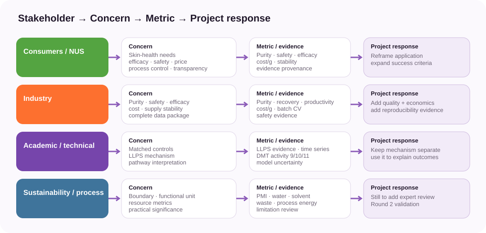
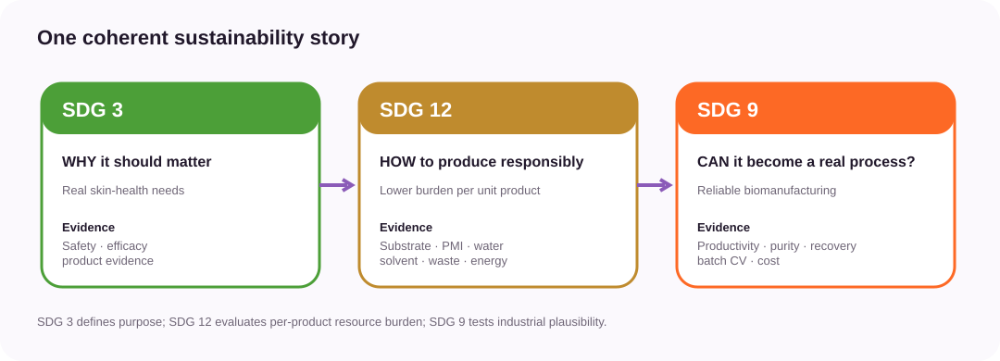
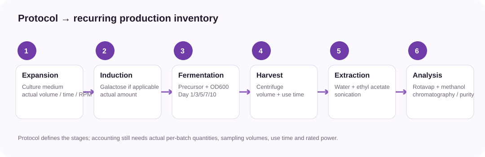
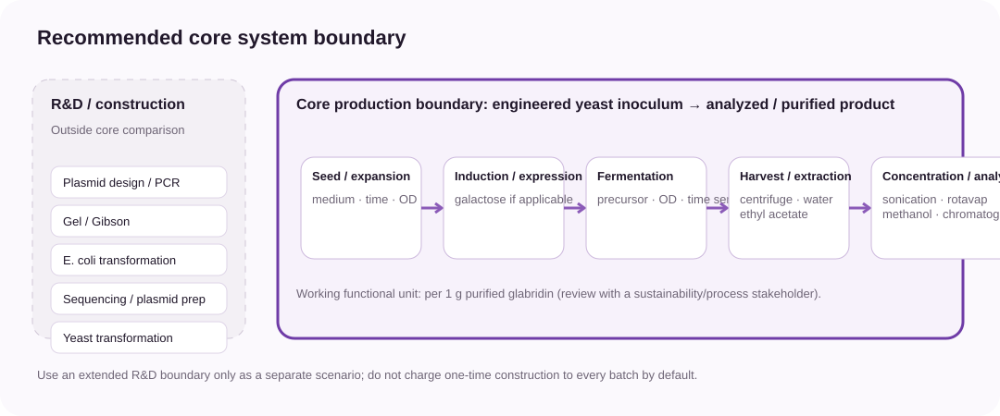
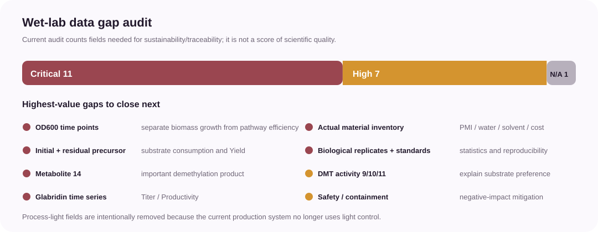

How the current work maps to the handbook
The 2026 Sustainable Development Impact rubric asks whether stakeholder feedback entered the work, whether social/environmental/economic impacts were addressed, whether positive and negative SDG interactions were considered, whether the work is reusable, and whether at least one SDG was addressed measurably and significantly.
Stakeholder → Metric analysis
Existing stakeholder material already supports a structured intervention map. The key analytical move is to convert concerns into metrics and project changes rather than present interviews as stand-alone narratives.

| Stakeholder | Documented concern | Metric / evidence | Project response | Status |
|---|---|---|---|---|
| Consumers / NUS interviewees | Hyperpigmentation, post-acne marks, uneven skin tone; efficacy; safety; price; purification/process control; transparency; long-term confidence | Application framing; purity/byproduct profile; safety evidence; efficacy evidence; cost/g; process stability; evidence provenance | Shift from generic whitening to skin-health needs; expand success criteria beyond titer | Stakeholder evidence available; quantitative validation pending |
| Industry / brands / CDMO | Purity (reported threshold >=95% in industry visit notes); safety testing; efficacy data; cost; supply stability; complete data package | Purity; recovery; productivity; cost/g; batch CV; safety test status; input-output record | Add quality, economics and reproducibility to engineering success criteria | Stakeholder evidence available; process data pending |
| Academic / technical experts | LLPS feasibility; enzyme recruitment; matched controls; pathway interpretation; model uncertainty | LLPS imaging/partition; matched No-LLPS vs LLPS; metabolite time series; DMT relative activity to 9/10/11 | Separate mechanistic evidence from sustainability metrics while using mechanism to explain production changes | Partly available; experimental results pending |
| Sustainability / process expert | Functional unit; system boundary; appropriate resource and energy metrics; practical significance | Functional unit; PMI; substrate/water/solvent/waste intensity; process energy; limitation review | Lock accounting boundary and judge whether simplified LCA is justified | Stakeholder still to add |
Internal sources used: NUS student interviews; GALATEA HP Storyline v4; previous Sustainable Development planning.
SDG 3 / 12 / 9 correspondence
The strongest structure is not three disconnected SDG labels. SDG 3 defines responsible purpose, SDG 12 evaluates resource burden per unit product, and SDG 9 asks whether the improvement can become a reliable manufacturing process.

| SDG | Core question | Current evidence | Planned metrics | Key risk | Readiness |
|---|---|---|---|---|---|
| SDG 3 | Does the project respond responsibly to real skin-health needs? | NUS interview themes; responsible reframing from generic whitening toward pigmentation-related needs; industry demand for quality/safety evidence | Purity; byproducts; safety evidence; efficacy evidence; Round 2 acceptance | Overclaiming health benefit without direct efficacy/safety evidence | Qualitative evidence available; experimental evidence incomplete |
| SDG 12 | Can GALATEA lower resource/process burden per unit product? | Protocol identifies precursor, culture, water, ethyl acetate, methanol and recurring equipment operations | Substrate consumed; biomass-normalized uptake; PMI; water intensity; solvent intensity; waste intensity; process energy | Burden shifting to solvent, water, energy or GMO waste | Inventory framework ready; actual batch data incomplete |
| SDG 9 | Can the improvement become a reliable and economically plausible manufacturing process? | Industry feedback emphasizes purity, cost, supply stability and a complete data package | Productivity; purity; recovery; batch CV; cost/g; sensitivity; scale-up scenario | Lab-scale benefit may not persist at scale; engineering complexity | Stakeholder requirements available; quantitative process data incomplete |
Protocol → Process inventory
The current protocol is already enough to define the recurring production stages and the materials/equipment that must be logged. The remaining gap is actual batch-level quantities rather than stage identification.

| Boundary | Stage | Input / operation | What the protocol already tells us | What to record now | Status |
|---|---|---|---|---|---|
| Out of core production boundary | Strain construction | Plasmid design / PCR / gel / Gibson / E. coli transformation / sequencing / plasmid extraction / yeast transformation | Documented as development steps | Keep for engineering/reproducibility; do not charge to every production batch unless an extended R&D boundary is reported | Documented |
| In core boundary | Seed / first expansion | Yeast culture | Protocol specifies first expansion before larger-scale culture | Actual medium composition; actual volume; time; temperature; RPM; inoculum OD | Partial protocol; batch values needed |
| In core boundary | Larger expansion | Yeast culture | Protocol specifies larger shake-flask expansion and either galactose induction or non-galactose pathway | Actual volume; time; temperature; RPM; promoter/induction mode | Partial protocol; batch values needed |
| In core boundary | Induction | Galactose where applicable | Protocol records galactose induction for relevant constructs | Actual galactose amount/concentration per batch | Protocol value available; actual batch confirmation needed |
| In core boundary | Fermentation | OC precursor / 4'-O-methylglabridin | Protocol records precursor addition and Day 1/3/5/7/10 sampling plan | Initial precursor; residual precursor; sampling volume; OD600; product/intermediates | Sampling plan available; results needed |
| In core boundary | Harvest | Centrifugation | Protocol includes centrifugation before extraction | Actual run time; speed/RCF; equipment ID/power; processed volume | Partial protocol; energy data needed |
| In core boundary | Cell resuspension | Water | Protocol includes water resuspension | Actual water volume per batch | Protocol template available; actual batch value needed |
| In core boundary | Extraction | Ethyl acetate | Protocol includes ethyl-acetate extraction and sonication | Actual solvent volume; sonication time; equipment ID/power | Protocol template available; batch/energy data needed |
| In core boundary | Concentration | Rotary evaporation | Protocol includes rotary evaporation | Duration; bath temperature; vacuum; equipment power | Operation documented; quantitative data needed |
| In core boundary | Analytical preparation | Methanol and re-dissolution solvent | Protocol includes re-dissolution and methanol dilution before chromatography | Actual solvent volumes; dilution factor | Operation documented; quantitative data needed |
| In core boundary | Product analysis | Chromatography | Protocol measures concentration and purity | Glabridin concentration; purity; intermediate concentrations; standard curves; detection limits | Method planned; quantitative results needed |
System boundary
For the main No-LLPS vs LLPS comparison, use a recurring production boundary that starts from an engineered yeast inoculum and ends at analyzed/purified product. Keep one-time strain construction outside the core boundary unless it is reported separately as an extended R&D scenario.

Recurring production
Seed/expansion, induction where applicable, precursor fermentation, harvest, extraction, concentration and product analysis/purification.
One-time R&D
PCR, gel, Gibson, E. coli transformation, sequencing, plasmid preparation and yeast transformation.
Functional unit
Working recommendation: per 1 g purified glabridin. A different unit can be retained if purification is not yet sufficiently defined, but the choice must be explicit.
Wet-lab data gap audit
The audit identifies 11 critical data fields, 7 high-priority fields and one obsolete light-control field. These counts describe analysis readiness, not experimental quality.

| Category | Data item | Why needed | Current source status | Action | Priority |
|---|---|---|---|---|---|
| Experiment identity | Host strain | Traceability and fair matched comparison | Host yeast mentioned but strain identity not present in current sustainability dataset | Record exact strain | Critical |
| Experiment identity | Integration site / plasmid copy number | Explain expression architecture and reproducibility | Requested in wet-lab correction; value not yet supplied | Record exact value or state unknown | High |
| Experiment identity | Promoter per construct | Interpret induction mode and match controls | Protocol distinguishes galactose vs non-galactose systems; construct-specific assignment incomplete | Record promoter and induction mode per construct | Critical |
| Experiment identity | ER anchor / SH3-PDZ / ligand / fusion / linker / fluorescent tag | Reproducibility and mechanistic interpretation | Requested in wet-lab correction; exact metadata not yet supplied | Create construct metadata sheet | High |
| Culture & production | Actual culture volume / time / temperature / RPM | Normalize production and resource inputs | Protocol gives template conditions; actual batch values absent | Record actual values per batch | Critical |
| Culture & production | OD600 time points | Separate biomass growth from pathway-efficiency effects | Not in current protocol output; wet-lab team suggested adding OD | Measure at substrate addition and final time; ideally sampling time points | Critical |
| Culture & production | Initial and residual precursor concentration | Calculate substrate consumption and yield | Initial precursor condition described; residual concentration absent | Measure both initial and residual precursor | Critical |
| Culture & production | Glabridin concentration | Titer/yield/productivity | Protocol plans concentration measurement; results not provided | Measure all core replicates/time points | Critical |
| Metabolite time series | Metabolite 14 | Track important demethylation product and pathway bottleneck | Newly requested by wet-lab team; not in current dataset | Add quantitative method/standard if feasible | Critical |
| Metabolite time series | Intermediates 9/10/11 | Explain pathway distribution and DMT substrate preference | Requested; results not provided | Quantify where feasible; define detection/standard limitations | High |
| Enzyme function | DMT relative activity toward 9/10/11 | Distinguish substrate preference from LLPS organization effects | Newly requested; no results | Measure relative activity under matched assay conditions | High |
| Resource inventory | Actual medium / inducer / precursor quantities | PMI and cost | Protocol identifies materials but not complete actual per-batch inventory | Record actual batch input | Critical |
| Resource inventory | Water / ethyl acetate / methanol quantities | Water/solvent intensity and downstream burden | Protocol identifies these inputs; actual batch totals incomplete | Record actual volume for every batch/sample | Critical |
| Resource inventory | Equipment use time and rated power | Process energy intensity | Some operations documented; complete duration and power absent | Record use time; look up nameplate/rated power separately | High |
| Product quality | Purity and recovery | Industry relevance and downstream efficiency | Purity measurement planned; recovery not defined | Measure purity; record crude vs purified amount if purification is performed | High |
| Safety | Containment / inactivation evidence | Negative-impact and GMO waste mitigation | Not present in current protocol | Add one quantitative containment/inactivation test if feasible | High |
| QA | Biological replicates >=3 for core endpoints | Reproducibility and statistical significance | Required by sustainability plan; actual completed replicate count not confirmed | Lock replicate plan and IDs | Critical |
| QA | Standard curves / detection limits / raw-data links | Quantitative credibility and reusability | Requested in data package; not yet supplied | Archive standards, LOD/LOQ if available, raw-data path | Critical |
| Removed | Process light-control parameters | Old energy model no longer applies | Wet-lab team confirmed process light control is no longer used | Remove wavelength/irradiance/duty-cycle fields | Not applicable |
Analyses that become available when measured data arrive
Production benchmark
Titer, Yield, Productivity, effect sizes, replicate variation and a matched No-LLPS vs LLPS comparison.
Biomass-normalized uptake
Substrate consumption normalized by biomass proxy and time, with the OD-to-biomass assumption stated explicitly.
Metabolite dynamics
14 / 9 / 10 / 11 / glabridin time series; DMT substrate-preference comparison; Sankey only if quantitative mass-flow interpretation is defensible.
SDG 12 resource indicators
PMI, water intensity, solvent intensity, waste intensity and process energy per unit product.
SDG 9 economics
Basic cost/g and sensitivity analysis for Yield, precursor, solvent, productivity and recovery.
Round 2 validation
Return actual improvements to industry, consumers and a sustainability/process expert to judge practical significance and remaining limitations.